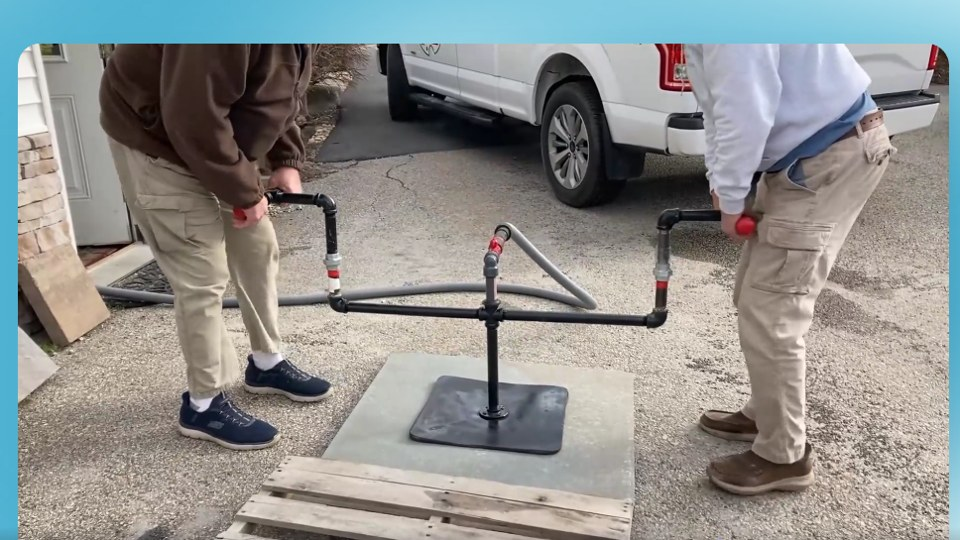
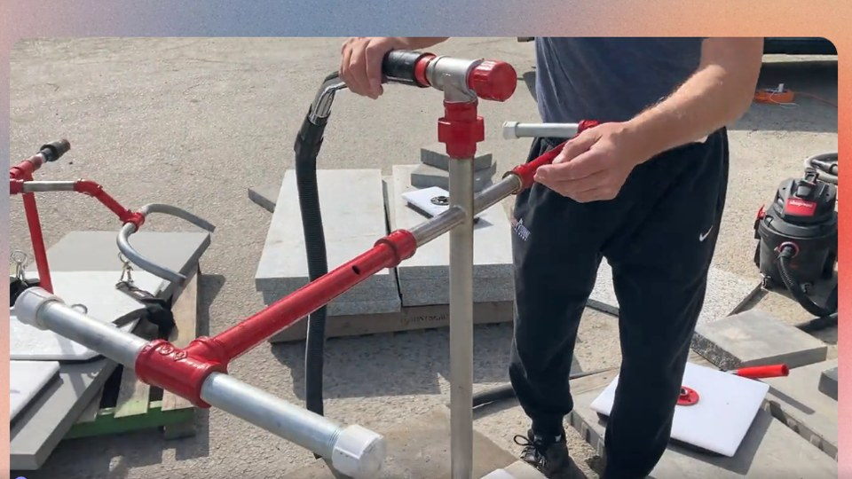

0:32
Quick draft
Two-Person Slab Lift
A rough first pass of two people lifting a slab with the Time Paver. Opens in a new tab.
Watch the videoThese are rough, unpolished clips put together in minutes to show the kinds of videos we can produce for Time Paver.
They are not finished videos. Final versions would be fully edited, branded and tuned to your message.

A rough first pass of two people lifting a slab with the Time Paver. Opens in a new tab.
Watch the video
A rough first pass showing stones lifted with vacuum plates. Opens in a new tab.
Watch the video